Part II generates set-by-set pelagic longline operations on top of the biomass truth and keeps the complete truth of the fishing process: the latent strategy, the density at the set, every component of the catchability, the expected catch and so on. The causal order is
biomass → fleets → vessels → trips → sets → location → strategy → gear → catchability → expected catch → true catch → companion species
Effort is always the number of hooks per set. Everything that changes the catch per hook (fleet, vessel, strategy, HBF, creep, space, residual) is catchability.
library(pelagicOM)
library(ggplot2)
sim <- simulate_biomass(om_biomass_config("BET_ICCAT"), verbose = FALSE)
fcfg <- om_fishery_config("BET_ICCAT")
fish <- simulate_fishery(sim, fcfg)
#> == 1. Population truth (Part I) ==================
#> population truth: 10051 cells x 76 years (1950-2025)
#> B_total 950000 t (1950) -> 318101 t (2025) | Part I label: 'base'
#> == 2. Fleets and vessels =========================
#> 826 vessels (13140 vessel-years)
#> == 3. Trips and sets =============================
#> 98782 trips | 1137186 sets | vessel-years with n_sets raised to n_trips: 0
#> == 4. Location of the sets =======================
#> distinct cells fished: 6221 | sets by fidelity: 49.5%
#> == 5. Strategy and gear ==========================
#> == 6. Catchability and catch =====================
#> mean catch 0.444 t | median 0.014 | zeros 49.7% | total 505430 t
#> == 7. Structural checks ==========================
#> structural checks of the fishery truth: OK (1137186 sets)
fish
#> <pelagicOM fishery truth> label 'base'
#> 1,137,186 sets | 98,782 trips | 826 vessels | 5 fleets | 1950-2025
#> target catch: total 505,430 t | mean 0.444 t/set | zeros 49.7%
#> sets by fleet x region:
#>
#> R01 R02 R03
#> A 33485 262520 0
#> B 14577 248727 0
#> C 24926 181206 0
#> D 0 203569 18346
#> E 0 125780 24050Each stochastic module has its own seed
(fcfg$reproducibility$seeds), so changing one process does
not reshuffle the draws of the others:
unlist(fcfg$reproducibility$seeds)
#> vessels trips sets spatial strategy gear
#> 20261101 20261102 20261103 20261104 20261105 20261106
#> catchability catch species observation
#> 20261107 20261108 20261110 202611091. Fleets
Each fleet has:
- a size (vessel slots kept active) and a period of activity;
- access to a set of regions, and a centre with a spread for its baseline spatial preference;
- seasonal weights for its trips and an effort trend (median hooks per set);
- an HBF multiplier and a composition of fishing strategies;
- a fleet effect on log q.
knitr::kable(fish$fleets)| Fleet | n_vessels | year_start | year_end | regions | core_lon | core_lat | core_sd | q_effect | hbf_mult |
|---|---|---|---|---|---|---|---|---|---|
| A | 45 | 1950 | 2025 | R01+R02 | -45 | 12 | 20 | 0.00 | 1.0 |
| B | 40 | 1950 | 2025 | R01+R02 | -25 | 8 | 20 | 0.10 | 1.1 |
| C | 35 | 1958 | 2025 | R01+R02 | -15 | 22 | 18 | -0.35 | 0.8 |
| D | 40 | 1962 | 2025 | R02+R03 | -30 | -8 | 20 | -0.10 | 1.0 |
| E | 30 | 1968 | 2025 | R02+R03 | 0 | -18 | 18 | -0.25 | 0.9 |
New fleets are created with om_fleet() (see Tuning).
2. Vessels, trips and sets
- Each fleet keeps
n_vesselsslots filled. When a vessel retires (career -
N(
career_mean,career_sd), at leastcareer_minyears), a new vessel enters the following year. The first cohort gets a uniform remaining career so that exits are staggered. Each vessel-year makes 5-10 trips, each in a quarter drawn with the fleet weights, and each trip makes 8-15 sets (sets$unit = "per_trip"). The alternative"per_vessel_year"draws 8-15 sets per vessel-year, which is the literal original specification.
head(fish$vessels)
#> VesselID Fleet Year_in Year_out Career Slot
#> 1 A_001 A 1950 1981 32 1
#> 2 A_002 A 1982 1997 16 1
#> 3 A_003 A 1998 2018 21 1
#> 4 A_004 A 2019 2025 7 1
#> 5 A_005 A 1950 1984 35 2
#> 6 A_006 A 1985 2000 16 2
nrow(fish$trips)
#> [1] 98782
av <- active_vessels_by_year(fish$vessel_years)
av$Year <- as.integer(as.character(av$Year))
ggplot(av, aes(Year, n_vessels, colour = Fleet)) +
geom_line() + scale_colour_grey(end = 0.75) +
labs(y = "Active vessels") + theme_pub()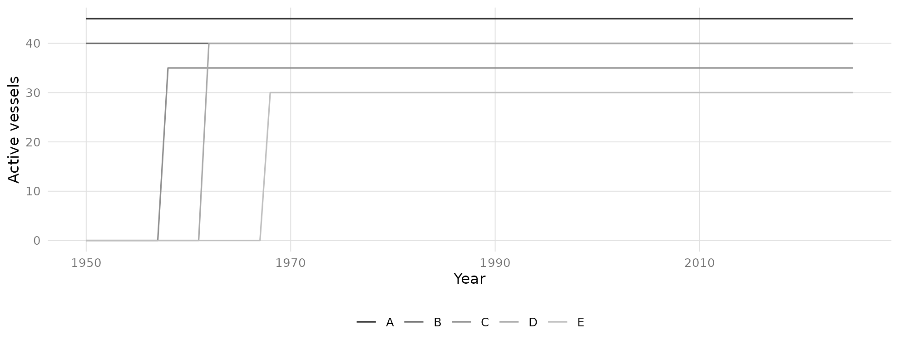
fig_effort_time(fish)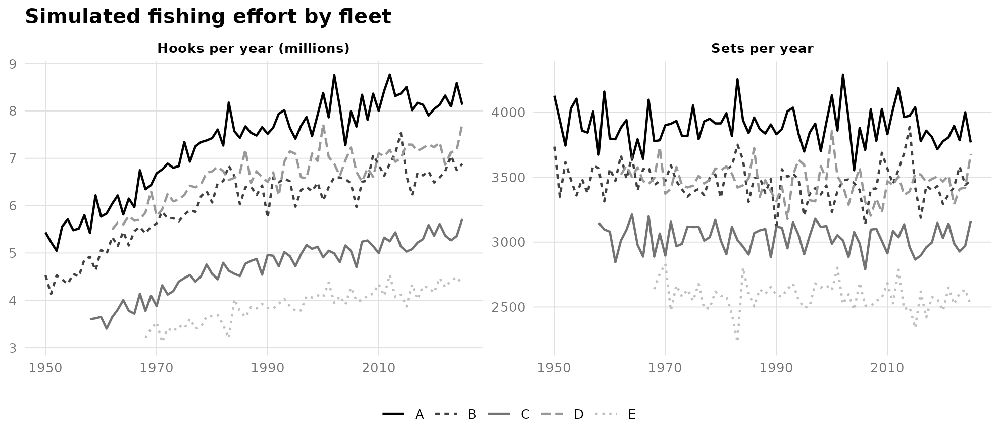
3. Where the sets are made
Within its footprint, a fleet chooses the cell of a set with probability
\[ P(s) \propto D(y, s)^{\theta}\; g_f(s) \]
-
\(\theta\) is
preferential_sampling_strength(1 in the base; 0 removes the dependence on density). - \(g_f\) is a Gaussian preference around the fleet centre.
- The footprint is the accessible area (regions of
the fleet), revealed from the centre outwards as the fleet expands
(
expansion_profile, a function of the years since the fleet started). - With probability
fidelity, a set repeats the cell of the previous set of the same vessel-year.
str(fcfg$spatial)
#> List of 6
#> $ preferential_sampling_strength: num 1
#> $ fidelity : num 0.5
#> $ core_preference_enabled : logi TRUE
#> $ expansion_enabled : logi TRUE
#> $ expansion_profile : Named num [1:3] 0.3 0.7 1
#> ..- attr(*, "names")= chr [1:3] "0" "25" "50"
#> $ density_floor : num 1e-06
table(fish$data$SpatialChoice) / nrow(fish$data)
#>
#> fidelity preference
#> 0.4947229 0.5052771
fig_effort_maps(fish)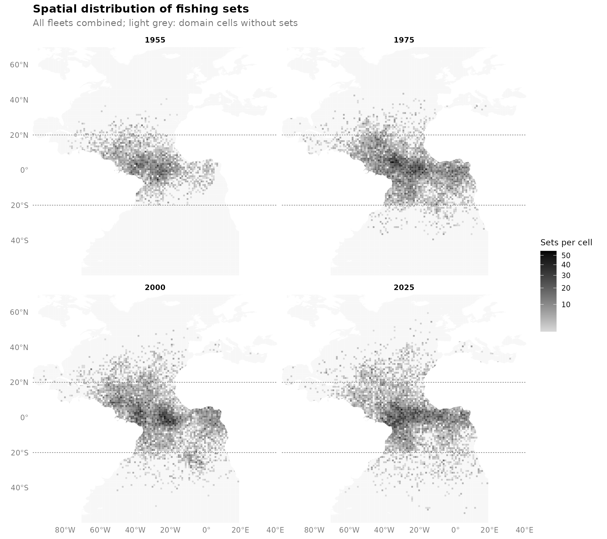
4. Fishing strategy and gear
The latent strategy (S1, S2, S3) of each set is drawn from the fleet
composition. The odds of drift_level (S1) grow in time
(drift_S1_odds). Hooks per set are lognormal around the
fleet median (CV hooks_cv, truncated to
hooks_range). HBF follows the median of the strategy,
multiplied by the fleet multiplier, a persistent vessel habit and
lognormal noise per set:
str(fcfg$gear$hbf_by_strategy)
#> List of 3
#> $ S1: Named num [1:4] 6 8 13 16
#> ..- attr(*, "names")= chr [1:4] "1950" "1975" "1985" "2025"
#> $ S2: Named num [1:4] 5 6 9 10
#> ..- attr(*, "names")= chr [1:4] "1950" "1975" "1990" "2025"
#> $ S3: Named num [1:2] 4 6
#> ..- attr(*, "names")= chr [1:2] "1950" "2025"
fig_strategy(fish)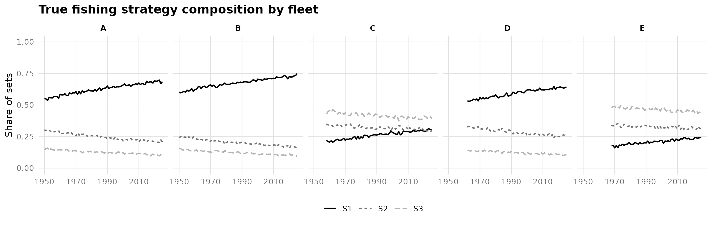
fig_gear(fish)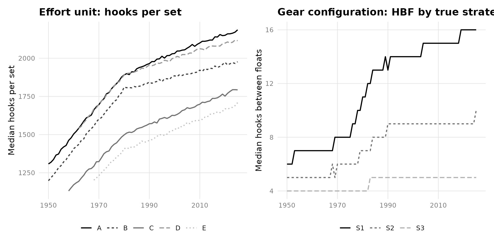
5. Catchability
\[ \begin{aligned} \log q = \log q_0 &+ \beta_{fleet} + b_{vessel} + \beta_{strategy} + f(HBF) \\ &+ c\,(y - y_0) + \beta_{quarter} + \beta_{region} + Z_q(s) + e \end{aligned} \]
The terms are:
-
\(b_{vessel}\) is a persistent
random vessel effect (
vessel_sd); - \(f(HBF)\) is saturating, \(a(1 - e^{-b(h-4)})\), centred at the reference HBF;
- \(c\) is the creep (1% per year in the base);
- \(Z_q\) is a persistent spatial field of catchability;
- \(e\) is a residual per set.
hb <- data.frame(HBF = 4:26)
hb$effect <- hbf_effect_fun(hb$HBF, fcfg$catchability$hbf)
ggplot(hb, aes(HBF, effect)) + geom_line() +
geom_vline(xintercept = fcfg$catchability$hbf$ref, linetype = "22") +
labs(y = "f(HBF) in log q") + theme_pub()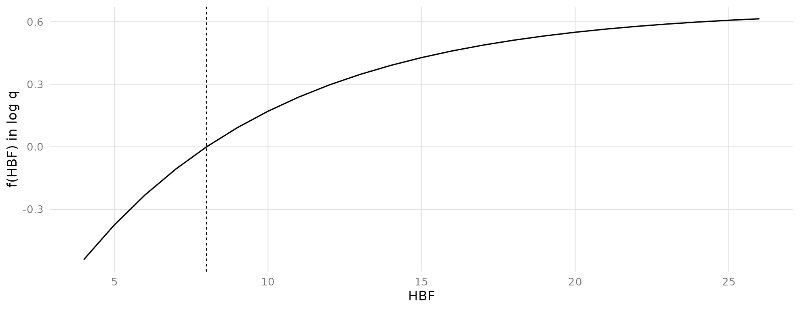
fig_catchability_time(fish)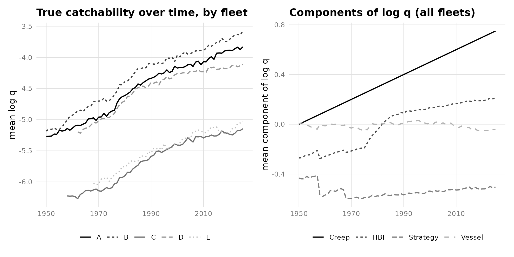
fig_catchability_factors(fish)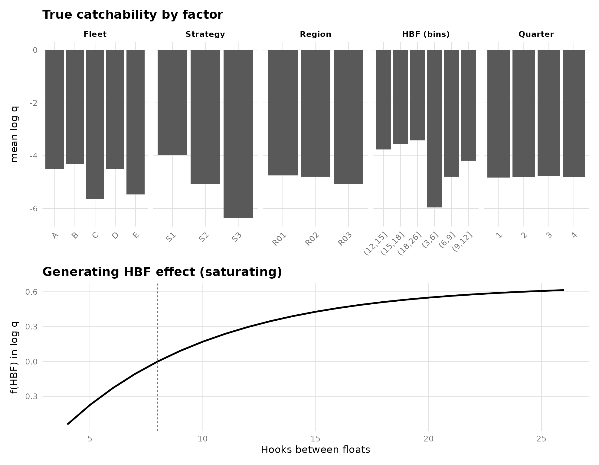
fig_vessel_effects(fish)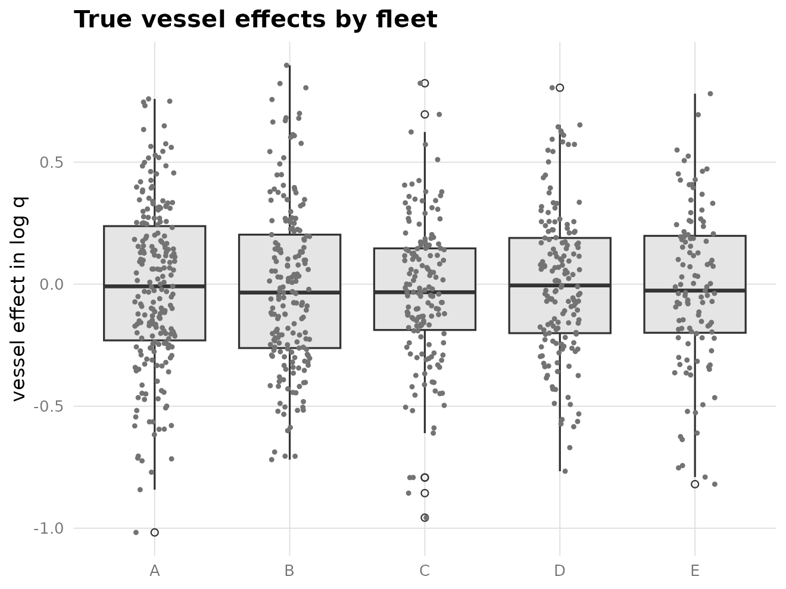
cq <- catchability_summary_table(fish$data)
knitr::kable(head(cq[cq$factor != "Year", c("factor", "level", "n_sets",
"mean_log_q")], 12), digits = 3)| factor | level | n_sets | mean_log_q | |
|---|---|---|---|---|
| 77 | Fleet | A | 296005 | -4.507 |
| 78 | Fleet | B | 263304 | -4.313 |
| 79 | Fleet | C | 206132 | -5.653 |
| 80 | Fleet | D | 221915 | -4.505 |
| 81 | Fleet | E | 149830 | -5.473 |
| 82 | FishingStrategy | S1 | 579474 | -3.969 |
| 83 | FishingStrategy | S2 | 305325 | -5.073 |
| 84 | FishingStrategy | S3 | 252387 | -6.363 |
| 85 | Region | R01 | 72988 | -4.750 |
| 86 | Region | R02 | 1021802 | -4.789 |
| 87 | Region | R03 | 42396 | -5.066 |
| 88 | HooksBetweenFloats | (3,6] | 387489 | -5.959 |
6. Catch of the target species
The expected catch of a set is \(\mu = q
\times \text{Hooks} \times D(y, s)\). Density is used, not
biomass, because the gear samples a local volume. The true catch is
drawn from a Tweedie distribution (compound Poisson-Gamma, power
power, dispersion dispersion) or, optionally,
from a delta-lognormal one:
str(fcfg$catch_process)
#> List of 4
#> $ distribution: chr "tweedie"
#> $ power : num 1.4
#> $ dispersion : num 1
#> $ delta :List of 3
#> ..$ logit_a: num 1
#> ..$ logit_b: num 1
#> ..$ sdlog : num 0.8
set.seed(1)
x <- rtweedie_cpg(rep(0.5, 1e5), p = 1.4, phi = 1)
c(mean = mean(x), prop_zero = mean(x == 0))
#> mean prop_zero
#> 0.4983827 0.3336500
fig_catch_distribution(fish)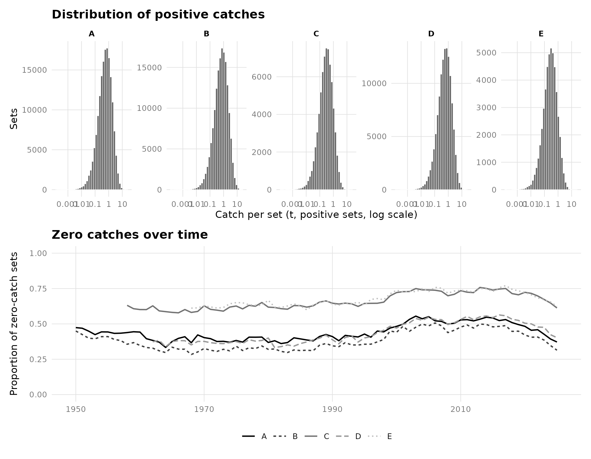
7. Companion species
Each companion species \(j\) has an expected catch
\[ \begin{aligned} \log \mu_j = \log(\text{ref}_j/1000) &+ \log(\text{Hooks}) + \beta_j[\text{strategy}] + h_j\, g(HBF) \\ &+ E_j(\text{lat}) + \log T_j(y) + e \end{aligned} \]
and a Tweedie catch. The composition of the catch is the signature of the latent strategy: deep sets (S1) catch BET and ALB, shallow sets (S3) catch SWO and BSH. Methods based on clusters or on direct principal components look for exactly this signature.
str(fcfg$species$params$SWO)
#> List of 7
#> $ ref : num 0.45
#> $ strategy_effect: Named num [1:3] -2 -1 0
#> ..- attr(*, "names")= chr [1:3] "S1" "S2" "S3"
#> $ hbf_effect : num -0.9
#> $ lat_center : num 20
#> $ lat_sd : num 20
#> $ use_abs_lat : logi TRUE
#> $ trend : Named num [1:2] 1 0.8
#> ..- attr(*, "names")= chr [1:2] "1950" "2025"
fig_species_composition(fish)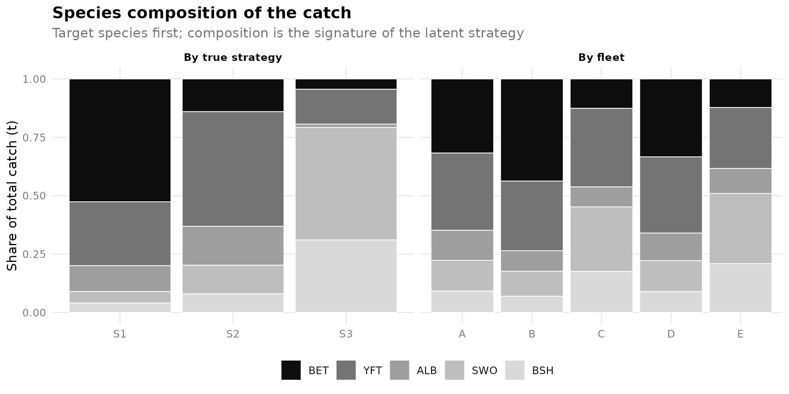
strategy_recovery_diagnostic(fish$data, fcfg)$summary
#> n_sets k cluster_accuracy_best_match pc1_var_explained pc2_var_explained
#> 1 50000 3 0.59572 0.29545 0.2259
#> r2_pc1_vs_strategy r2_pc2_vs_strategy
#> 1 0.3604951 0.052717488. Nominal CPUE versus the truth
fig_cpue_vs_biomass(fish)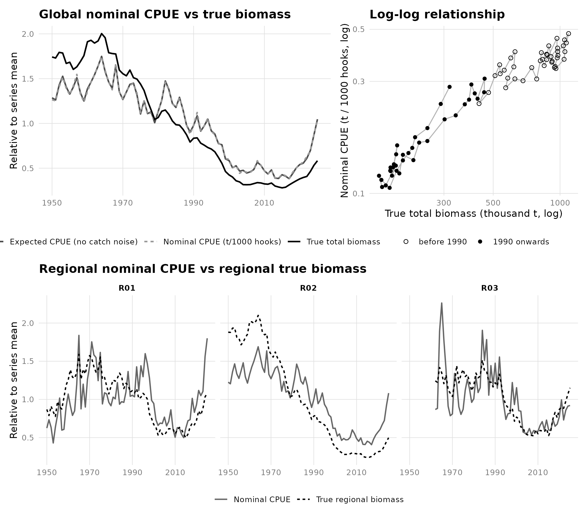
fig_cpue_fleet_strategy(fish)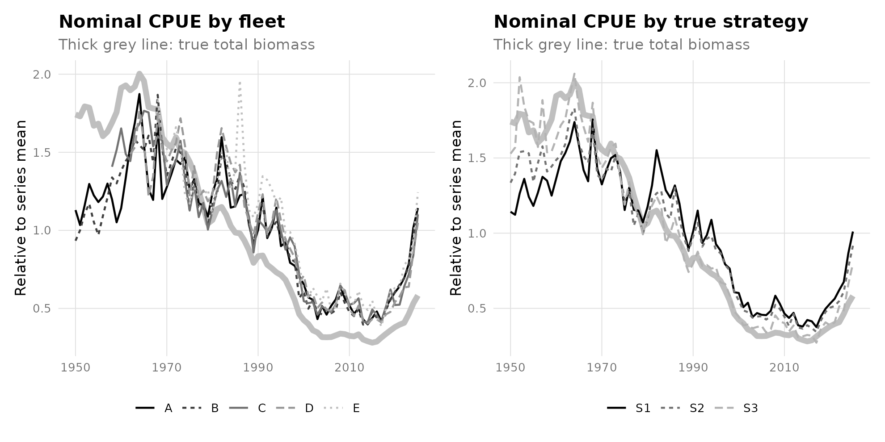
The log-log slope of nominal CPUE on true biomass is a quick diagnostic of hyperstability (β < 1):
tg <- cpue_biomass_table(fish$data, fish$truth)
tr <- cpue_biomass_table(fish$data, fish$truth, "Region")
knitr::kable(rbind(cpue_biomass_slopes(tg), cpue_biomass_slopes(tr)),
digits = 3)| factor | level | n_years | beta_raw | beta_expected | r_log | |
|---|---|---|---|---|---|---|
| ALL | Global | ALL | 76 | 0.664 | 0.668 | 0.968 |
| R01 | Region | R01 | 76 | 0.685 | 0.643 | 0.686 |
| R02 | Region | R02 | 76 | 0.550 | 0.554 | 0.956 |
| R03 | Region | R03 | 64 | 0.853 | 0.849 | 0.814 |
9. Structural checks
simulate_fishery() always runs
check_fishery_truth(), which stops on any violation:
- non-negative, finite catches;
- hooks and HBF within their ranges;
- identifier hierarchy (set within trip within vessel within fleet);
- cells and coordinates taken from the biomass truth;
- regional access of each fleet;
- vessel active in the year of the set;
- the identity \(E[C] = q \times \text{Hooks} \times D\).
check_fishery_truth(fish$data, fish$truth, fish$vessels, fcfg)
#> structural checks of the fishery truth: OK (1137186 sets)All twelve figures are available through
fishery_figures(fish, scenarios) and
make_fishery_figures(). The diagnostic tables are listed in
?fishery_diagnostics.